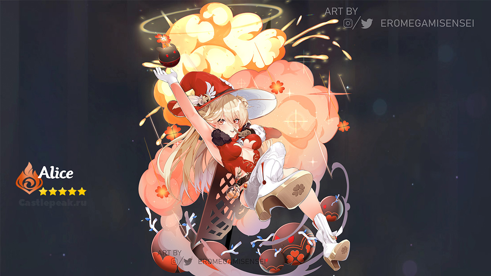

Алиса — неиграбельный персонаж в Genshin Impact
Алиса является известным искателем приключений, матерью Кли и автором Путеводителя по Тейвату. Также она упоминается как старейшина Ведьминого шабаша. По словам самой Алисы, она и Кли относятся к расе долгожителей, без уточнения названия расы. В задании «Ещё один отпуск на архипелаге Золотого яблока!» Венти упомянул расу — эльфы, а также факт того, что Алиса не стареет.
Описание
Характер
Алиса — довольно свободолюбивая и прямолинейная личность, которой чужда стеснительность, судя по стилю написания её Путеводителя. Несмотря на свою деструктивность, Алиса является довольно сильным и умным человеком, черпающим вдохновение из своих странствий и имеющим большое количество знаний в различных областях. Как отмечают Джинн и Альбедо, Кли во многом похожа на свою мать.
История
В прошлом Алиса дружила и соперничала с наставницей Моны. Алиса заключила с наставницей договор, в результате которого смогла получить её дневник. Позже женщина поручила Моне вернуть дневник, поэтому астролог отправилась в Мондштадт к преемнику Алисы, кем оказалась Кли
В неизвестный период прошлого Алиса начала писать собственный путеводитель по Тейвату. Похоже, что книга начала распространяться недавно, так как Цзи Фан из книжного магазина «Ваньвэнь» утверждает, что издательство Ли Юэ перестало печатать путеводитель из-за его непопулярности. Сама серия довольно спорная из-за очень личного и субъективного стиля написания, который делает книгу больше похожей на личный дневник Алисы, нежели на настоящий путеводитель.
Во время своих странствий по Ли Юэ Алиса познакомилась с Чжун Ли, которого описала как «предельно серьезного» человека. Он выступал её спутником вплоть до Каменного леса Гуюнь.
Именно Алиса смастерила Додоко — пушистую куклу, прикрепленную к рюкзаку Кли.
Несколько лет назад Алиса со своим партнером отправилась в далёкое и очень опасное путешествие, доверив заботу о своей дочери Альбедо и рыцарям Ордо Фавониус.

Нарушение правил полёта
Однажды Мондштадт посетила девушка по имени Алиса. У неё получилось взлететь с планером по ветряному потоку, оставшемуся после убитого Анемо слайма. Легендарная искательница приключений выполнила серию фигур высшего пилотажа в небе над городом. Её выступление вызвало шумные аплодисменты толпы. Джинн, действующий магистр Ордо Фавониус, наказала её домашним арестом на 10 дней.
Способности
Алиса хорошо разбирается во многих областях науки, включая алхимию, астрологию и медицину. Также она, вероятно, является хорошим учителем, обучив Кли мастерить взрывчатку. Разрушительная сила Кли далека от силы Алисы, из чего можно сделать вывод о том, что Алиса очень сильна.
Алхимия
Изготовление бомб: Алиса взорвала несколько лагарей в логове Ужаса бури, чтобы облегчить себе подъем на башню. В настоящее время она ведет эксперименты для создания идеального катализатора взрыва.
Взрывоопасные куклы: Вдохновившись Бароном Зайчиком у Эмбер, Алиса создала подобные взрывающиеся игрушки под названием Додоко и научила Кли их мастерить.
Лекарства
Изготовление зелий: Зелья Алисы обладают сильным воздействием и способны лечить разнообразные недуги. Однако, несмотря на пользу, они имеют довольно серьезные побочные эффекты.
Скачать список зелийНаука
Вечный двигатель на основе хиличурлов: В ущелье Дадаупа Алиса предложила использовать хиличурлов, чтобы производить энергию для ветряных мельниц в Мондштадте. Её идея была отклонена.
Пусковое устройство: Находясь в долине Ветров, Алиса создала пусковое устройство, чтобы проверить возможность добраться до небесного острова, как однажды это сделала Веннесса. Однако исследование обернулось неудачей — хиличурлы, выступающие в роли её подопытных, смогли долететь лишь до охотничьих домиков Спрингвейла.
Прототип самоходной лодки: Стремясь превратить дом-раковину на отмели Яогуан в лодку, Алиса сделала три прототипа самоходной раковины. Однако, когда последний прототип тоже вышел из под контроля и взорвался, исследовательница забросила эту идею.
Попытки контралировать стражей руин: В каньоне светлой короны Алиса попыталась контролировать Стража Руин с помощью хиличурлов, однако эксперименты провалились. Окрестности после исследований также были разрушены.
Титулы
- Додокороль
- Мама (от Кли)
- Тётя Алиса (от Альбедо)
Источник информации: Статья